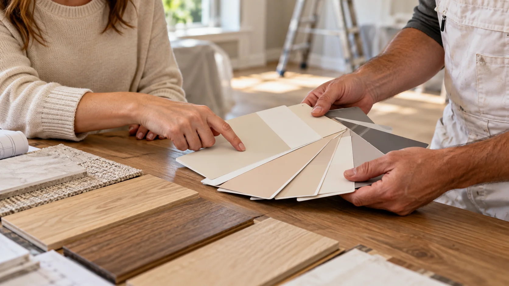

A warm, balanced living room transformation.
Fine wall repairs, a calm mineral neutral, and precise trim work changed the room without changing its character.
Project overview
Designed around daylight and existing materials.
The previous cool gray exaggerated surface defects and disconnected the room from its warm oak and linen furnishings. We selected a softer neutral and rebuilt the wall surface for an even low-sheen finish.
-
Location
Indianapolis, IN -
Service
Interior painting -
Project size
Living, dining, and entry -
Duration
Five working days -
Finish
Washable mineral matte

 Before
After
Before
After
Project process
From surface correction to the final edge.
Assess
Mapped cracks and sheen.
Protect
Covered floors and furniture.
Repair
Skimmed and sanded defects.
Sample
Reviewed colors in daylight.
Finish
Applied two measured coats.
Inspect
Completed final walkthrough.


"It feels brighter, warmer, and finally complete."
- Homeowner, North Meridian project